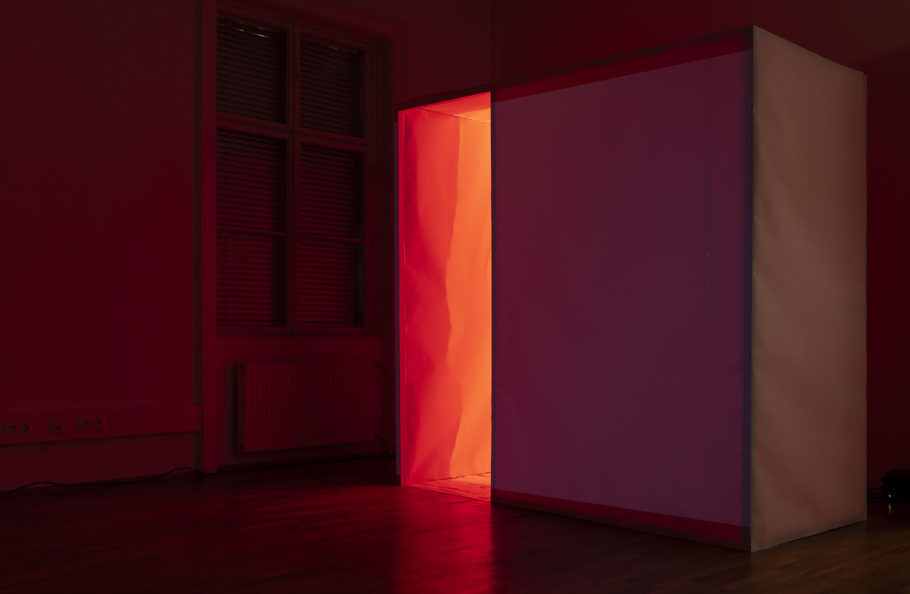
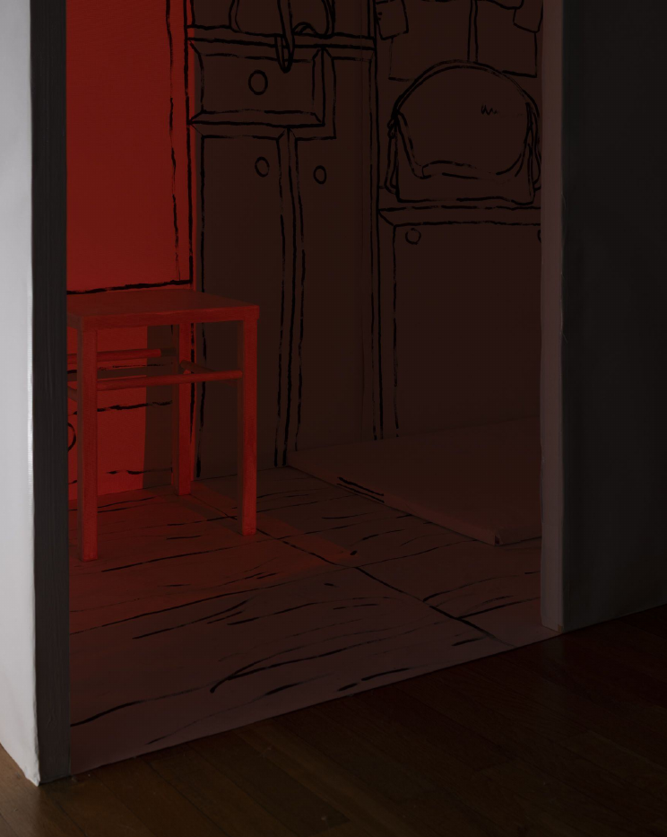
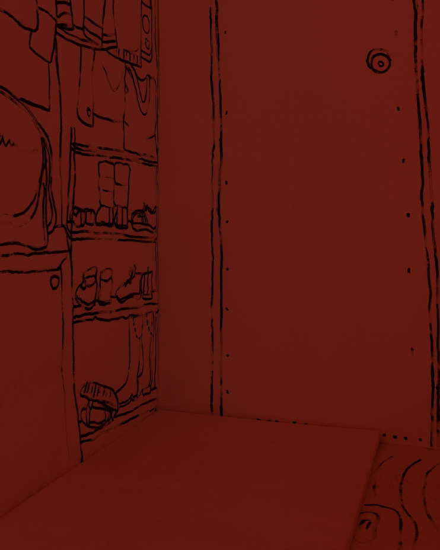
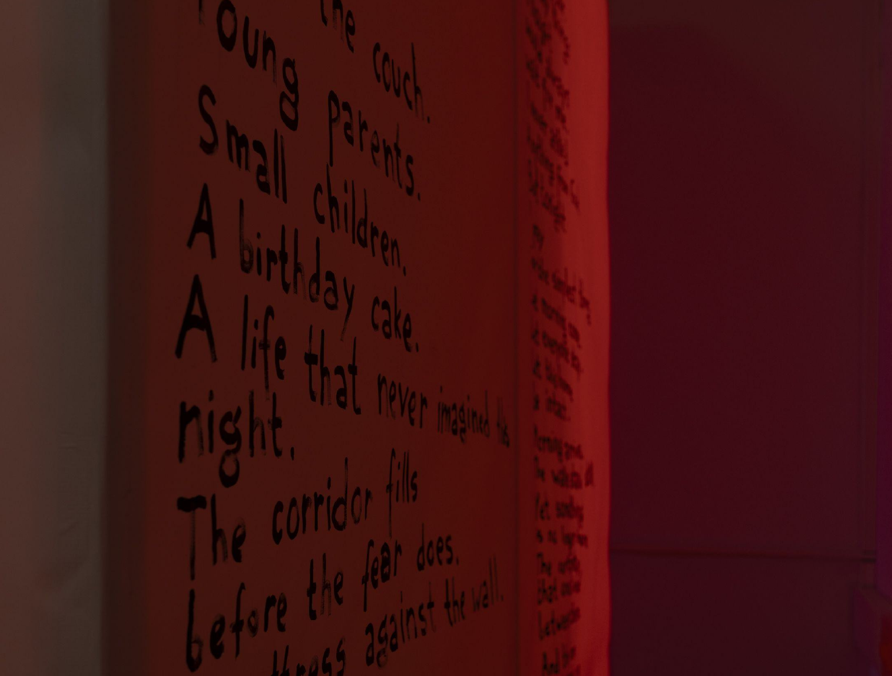

How does a home change when it no longer feels safe? My Paper Home is a spatial installation based on my experience of spending nights in the corridor of my family’s apartment during missile attacks in Kyiv. The project explores how war transforms the meaning of domestic space without physically changing it.



